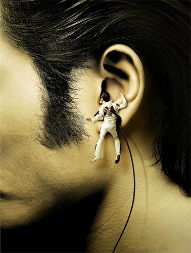
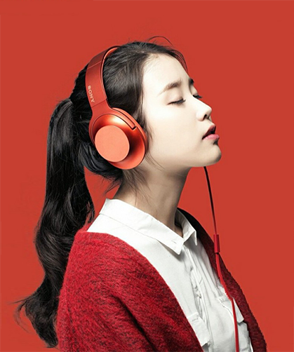
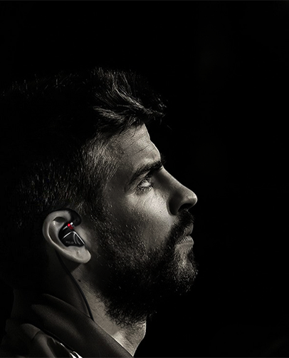
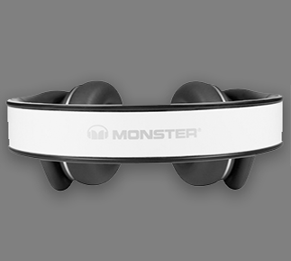
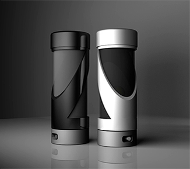

AKG(中文商标：爱科技)，音频领域最知名的品牌之一，全球四大耳机生产商之一，AKG这三个字母就是专业精神与声音品质的代表。AKG依靠话筒、耳机和通讯设备生存，良好的销售业绩向世人证明了这一决策的正确性。AKG在专业音频领域最有名望的产品是专业耳机和话筒。50多年中，AKG设计生产了用途各异的专业耳机达100多种型号，有通讯耳麦、专业监听耳机、电视伴音耳机、单声道耳机、四声道耳机、红外无线耳机、影院环绕声耳机等类型。 自1947年于音乐之乡奥地利创立以来，AKG(爱科技)迄今为止已经拥有了1 ,400多项专利技术，凭借其傲视同侪的最大、设备最完善，也是工作效率最高的室, 目前，AKG(爱科技)话筒和耳机已从音乐工作室和表演舞台扩大到了消费者、新闻编辑室、好莱坞电影摄影场，甚至外太空。
AKG (Chinese Trademark: love science and Technology), one of the most well-known brands in the field of audio, one of the world's four largest headphone manufacturer, AKG these letters are the representatives of professionalism
and sound quality.AKG rely on the microphone, headphones and communications equipment to survive, good sales performance to the world to prove the correctness of this decision. AKG is the most prestigious product in the field of professional audio professional headphones and microphones. 50 years, AKGdesign and production of professional headset use different types of more than 100, a communication
headset, headset, TV sound professional monitoring headset, mono headset, headset, four channel infrared wireless headset, headset and other types of theater surround sound. Since 1947 in Austria, the hometown of music creation, AKG (AKG) so far has 1, 400 patents, with its greatest disdain, the most perfect equipment, is currently the highest working efficiency of the room


-
经营理念
引导世界潮流 服务民族产业
Guide the trend of the world to serve the national industry
-
品牌形象
科技生活 以人为本
People-oriented science and technology life qualityservice
-
品质方针
满足客户要求 做一流品质 创一流服务
Meet requirements customer to do first-class first-class qualityservice
音质从来都不仅仅是喇叭的事
除了耳机芯喇叭单元的运用
professional headphones and microphones. 50 years, AKG
- 采用了阻抗小于0.50线材
- 度待复合振膜 40 动圈单元
- 采用32 欧姆阻抗